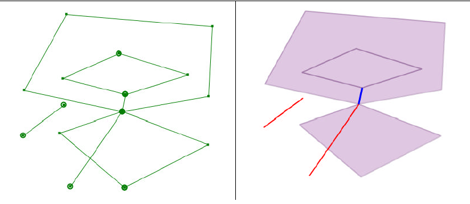

Build
Este geoproceso genera una capa de polígonos a partir de aquellos elementos de una capa de líneas que encierren superficies cerradas.
Se da la opción de añadir geometrías de error:Son aquellas geometrías que no forman parte de lineas cerradas y por tanto se les considera como geometrias de erroneas.
Puede ejecutar el geoproceso LineClean desde dentro del geoproceso Build, indicando las toleracias "fuzzy" y "dangle" que intervienen en el geoproceso LineClean.
